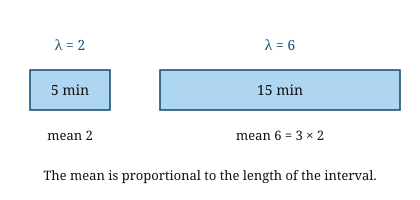

Based on Cambridge International AS & A Level Mathematics: Probability & Statistics 2 Coursebook (Jayne Kranat), Chapter 2 The Poisson distribution, printed pp.33–35 (Key point 2.4, Worked examples 2.3–2.4, Exercise 2B). Own wording and new numbers. The Poisson approximation to the binomial distribution, the normal approximation, and hypothesis tests are left to later subsections, as in the book.
Key words: Poisson distribution, Poisson parameter
A Poisson distribution is built on an average rate: a mean number of events per a given interval of time or space. If that rate is constant, then the mean in any other interval is proportional to the length of the interval. A common error is using the original mean for a different interval, without first scaling it.
For example, if events occur at a mean rate of \(2\) every \(5\) minutes, then in a \(15\)-minute interval the Poisson parameter is \(3\times 2=6\). The interval may be longer or shorter than the one in which the rate was first stated, and the new mean need not be a whole number.

Book: Worked example 2.3, p.34; new rate and intervals
People join a queue at random and independently at an average rate of \(2\) every \(5\) minutes. Write down the Poisson parameter for the number of people joining in a \(15\)-minute period, and find the Poisson parameter for a \(2\)-minute period.
Answer: \(6\) and \(0.8\)
Book: Worked example 2.3(a), p.34; new numbers, asking for the parameter rather than a calculator probability
Faults occur independently and at random along a cable at a mean rate of \(1.5\) faults per \(10\) metres. A length of \(40\) metres is inspected. Write down the distribution of the number of faults \(X\) in that length, and state \(\mathrm{E}(X)\).
Answer: \(X\sim\mathrm{Po}(6)\) and \(\mathrm{E}(X)=6\)
Events occur at a mean rate of \(5\) every \(10\) minutes. What is the Poisson parameter for a \(30\)-minute interval?
Answer: \(15\)
Calls arrive at a mean rate of \(1.2\) every \(4\) minutes. What is the Poisson parameter for a \(10\)-minute interval?
Answer: \(3\)
A machine produces faults at a mean rate of \(3\) per hour. What is the Poisson parameter for a \(20\)-minute interval?
Answer: \(1\)